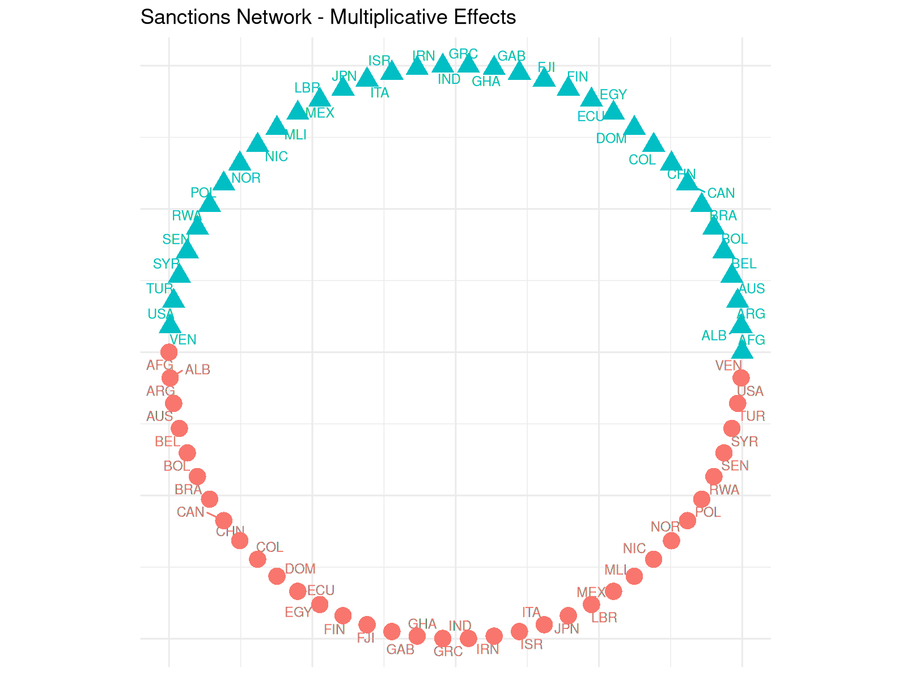

lame Overview
Cassy Dorff, Shahryar Minhas, and Tosin Salau
2025-08-12
Source:vignettes/lame-overview.Rmd
lame-overview.RmdPackage Overview
This vignette provides an overview of the lame package,
which offers a toolkit for estimating Additive and Multiplicative
Effects (AME) models for replicated relational/longitudinal data. It
easily handles changing actor composition and c++ implementation for
faster computation as well as missing data (Minhas et al. 2022; Hoff
2021). The package is designed as a part of the
netify-verse, which means it works seamlessly with the core
netify package. The netify package provides a
convenient way to prepare relational data for use with
lame.
What users can do:
Model different types of relational data: flexible for various data including normal (nrm), binary probit (bin), ordinal probit (ord), censored binary (cbin), fixed rank nomination (frn), and row rank (rrl) models showing its flexibility for various data.
Analyze replicated data: allows users to model how relationships evolve over time while accounting for network dependencies across time periods.
Visualize model parameters: use trace plots and density plots to assess convergence and parameter distributions. Users are able to visualize MCMC diagnostics and parameter uncertainty.
Evaluate model fit: use goodness-of-fit plots for network statistics such as heterogeneity, transitivity, dyadic dependence, and cyclic dependence. Users are able to visualize actual or deviation of the model fit for each year in the data, enabling users to analyze how well the model captures the unique network structure present in the data over time.
Visualize network patterns and actor latent space: use circular network plots to show sender and target countries in a clear and informative manner.
Users working with netify can easily prepare their data
for use with lame using the to_amen() function and setting
lame = TRUE allowing for direct model fitting without data
conversion.
Introduction
This vignette shows how to use the main functions in the
lame package. To do so, we will make use of data from the
Threat and Imposition of Sanctions (TIES) dataset (Morgan et.al 2014),
which contains information on sanctions imposed by countries on each
other. The data has been processed and contains 35 countries in the
years 1993-1995 and 2000. When loaded, the dataset includes 4 Rda
files:
Y: the sanction matrices (dependent Variable). The dependent variable consists of directed binary sanctions networks for four years: 1993, 1994, 1995, and 2000. Each matrix indicates whether country i imposed sanctions on country j in a given year.
Xdyad (dyadic covariates): We include two dyadic covariates found in Xdyad: distance and shared IGOs. These are stored in a list of matrices, one for each year.
Xrow and Xcol (nodal covariates): We include two nodal covariates for each country: GDP and population. These are stored in two matrices, Xrow and Xcol, where rows correspond to the sender countries and columns to the target countries. We can add different covariates for either target or sender countries but tto keep it simple, we will use the same covariates for both.
We begin by loading the TIES data.
We run the model using the lame() function. We specify
family = “binary” for binary network data and include both additive
effects (sender and receiver random effects) and multiplicative effects
(R = 2) to capture complex relational patterns across the time
periods.
Run the model
# Fit the AME model for binary data
fit <- lame(
Y = Y,
Xdyad = Xdyad, # dyadic covariates
Xrow = Xrow, # sender covariates
Xcol = Xcol, # receiver covariates
family = "binary", # Binary model
rvar = TRUE, # sender random effects
cvar = TRUE, # receiver random effects
dcor = TRUE, # Dyadic correlation
R = 2, # Multiplicative effects dimension
symmetric = FALSE, # Directed networks
burn = 100, # Burn-in iterations
nscan = 500, # Post-burn-in iterations
odens = 25, # Output density
print = FALSE, # Suppress iteration output
plot = FALSE # Suppress real-time plots
)First we can check the summary of the model using lame’s
built-in summary function.
summary(fit)
=== Longitudinal AME Model Summary ===
Call:
NULL
Regression coefficients:
------------------------
Estimate StdError z_value p_value CI_lower CI_upper
intercept 0 0 NaN NaN 0 0
log_gdp.row 0 0 NaN NaN 0 0
log_pop.row 0 0 NaN NaN 0 0
log_gdp.col 0 0 NaN NaN 0 0
log_pop.col 0 0 NaN NaN 0 0
distance.dyad 0 0 NaN NaN 0 0
shared_igos.dyad 0 0 NaN NaN 0 0
---
Signif. codes: 0 '***' 0.001 '**' 0.01 '*' 0.05 '.' 0.1 ' ' 1
Variance components:
-------------------
Estimate StdError
va 1.379 0.358
cab 1.325 0.339
vb 1.343 0.324
rho 0.539 0.077
ve 1.000 0.000We see that the model shows that wealthier and more populous countries are more likely to impose sanctions on less wealthy and less populous countries. We also observe that more populous countries are more likely to be sanctioned (target-column effects). In addition, countries that belong to the same international organizations are more likely to sanction each other. This suggests that institutions provide information and facilitate economic sanctions for countries that are members of the same organization. Distance is negatively associated with sanctions, this indicates that geographically closer countries are more likely to sanction each other.
We can check the types of parameters included in the fitted lame
model and use the trace_plot function to visualize how well
the model’s parameters converged.
names(fit)
[1] "BETA" "VC" "APM" "BPM"
[5] "U" "V" "UVPM" "EZ"
[9] "YPM" "GOF" "start_vals" "tryErrorChecks"
[13] "model.name" "family" "symmetric" "odmax"
[17] "mode" "n_time" "dynamic_uv" "dynamic_ab"
[21] "Xlist"
trace_plot(fit, params = "beta")
The trace_plot function produces traceplots and density
plots for each parameter in the model, helping visualize MCMC
convergence and posterior distributions.
Looking at the density plots, we can check if the parameters overlap with the 90% and 95% credible intervals. If they do, it indicates that there is no evidence for sender or receiver heterogeneity. If they do not overlap, it suggests that there is evidence for sender or receiver effects. In our example, all variables show there is no evidence for sender or receiver heterogeneity in sanctioning patterns across the countries, as the posterior distributions overlap with the credible intervals. From the trace plots, we need to run the Markov chain much longer for the model to converge.
Next, we will use the gof_plot function to visualize the
goodness of fit of the model.
gof_plot(fit) 
We analyze how well our model is able to accurately represent heterogeneity, transitivity and cycle dependence. The blue line shows the observed heterogeneity in the model and the red line is heterogeneity in the simulated values. The shaded area shows the 90% credible interval. We see that the model does a good job representing heterogeneity and transitivity but not dyadic and cyclic dependence in the data.
Since this is a longitudinal model (LAME), the gof_plot
function will automatically produce time series plots showing how the
network statistics evolve over time with credible intervals.
The plot shows the observed values (points) and posterior predictive intervals (shaded regions) for each network statistic across time periods. When observed values fall outside the credible bands, it suggests the model may not fully capture the network structure at those time points. This can help identify periods where the network exhibits unique characteristics that the model struggles to represent.
Finally, let’s visualize the latent space of sender and receiver
countries using the uv_plot function.
# Network plot showing multiplicative effects
uv_plot(fit) +
ggtitle("Sanctions Network - Multiplicative Effects") +
theme_minimal() +
theme(
legend.position='none',
axis.text=element_blank(),
axis.title=element_blank()
)
This function creates a visualization of the multiplicative effects (latent factors) from the model. Actors that are close together in the latent space tend to have similar patterns of connections - either targeting similar actors (if looking at sender positions) or being targeted by similar actors (if looking at receiver positions). Countries impose sanctions or receive sanctions from similar countries if they are close to each other in this latent space representation.
For instance, Canada (CAN) and USA are positioned close together indicating they sanction similar countries. Similarly, countries like Italy (ITA), Dominican Republic (DOM) and Japan (JPN) suggest they receive sanctions from similar countries. Actors diagonal to each other, such as Norway (NOR) and Iran (IRN), indicate that they are likely to sanction each other.
Conclusion
The lame package provides a way for users to analyze
additive and multiplicative effects across replicated relational data.
This vignette demonstrates the basic functionality of the
lame package and provides a walk-through application to
international sanctions data.
References:
Hoff, PD (2021) Additive and Multiplicative Effects Network Models. Statistical Science 36, 34–50.
Morgan, T. Clifton, Bapat, N., & Kobayashi, Y. (2014). Threat and Imposition of Economic Sanctions 1945-2005. Conflict Management and Peace Science 31(5): 541-558.
Minhas, S., Dorff, C., Gallop, M. B., Foster, M., Liu, H., Tellez, J., & Ward, M. D. (2022). Taking dyads seriously. Political Science Research and Methods, 10(4), 703–721. doi:10.1017/psrm.2021.56